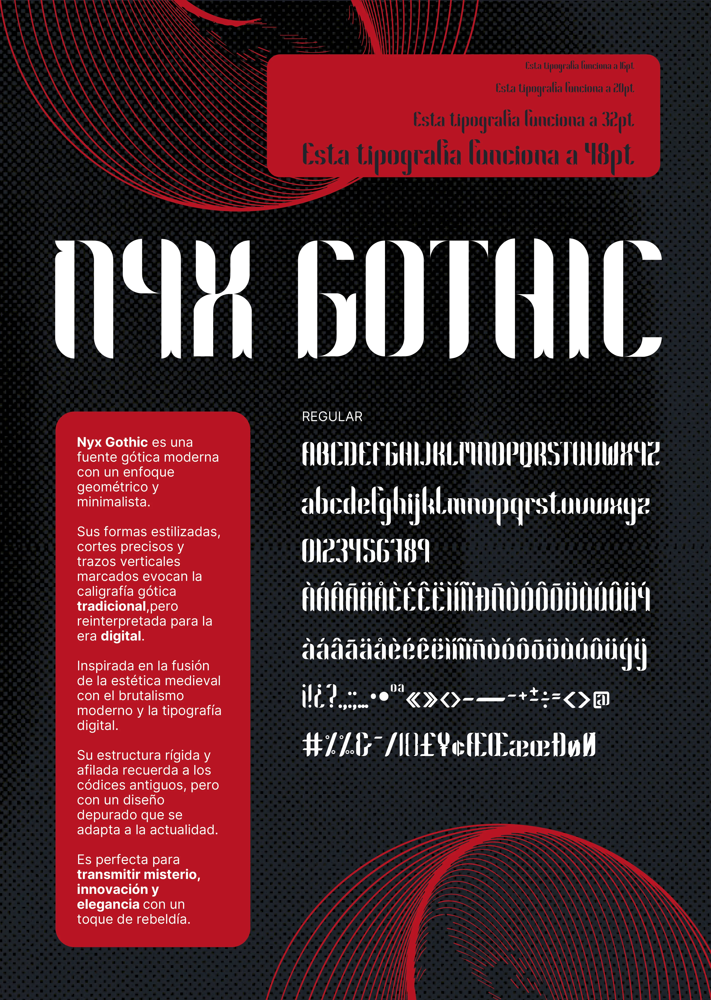
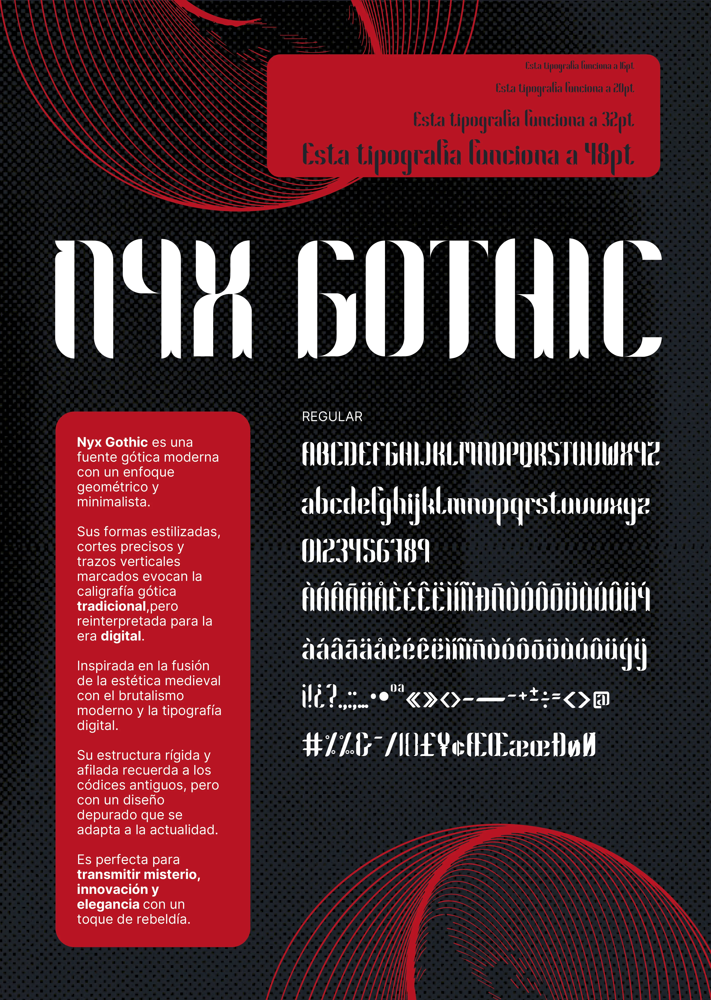

Proyectos de Tipografía
NYX GOTHIC
El encargo fue crear una tipografía desde cero,
partiendo de módulos y con libertad creativa.
El reto: reinterpretar la esencia gótica para la era digital.
El resultado es Nyx Gothic, una fuente geométrica y minimalista que une la fuerza de los códices
medievales con la precisión contemporánea.
Misteriosa, elegante y con un toque rebelde, está pensada para destacar en proyectos actuales.
El jazz ritual brinda un mix ágil; animan al gran dj.


 
